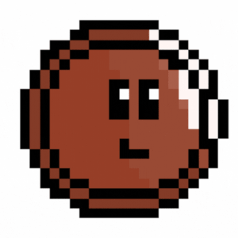

Life of a Penny Game Development
A 2D platform game where you roll through the couch you've been lost in playing as a penny trying to get back to the pocket that dropped you.
Developing The Concept
For this project, I had the opportunity to work with my groupmates, Larissa Tsai, and Michelle Leano to create a video game in Unity. Once we had begun brainstorming ideas individually, we decided to meet and share our game ideas. In the end go with Life of a Penny, a 2D platform-style game where you play as a penny that's been dropped from its pocket and are trying to return to the pocket that dropped you. We drew up an initial storyboard for our ideal game with different levels, and our initial Penny character.

My Contributions
While working on this project I had a chance to learn quite a lot about Unity, Animation, and the overall development process when making a video game. The first thing that I began working on was the tile palette and main Penny character sprites. I knew that I wanted to have a smooth movement system for the player character, so I went straight to work on the run, jump, wall jump, dash, and spin movements and matched them up to the animations I had made with my sprites.
The next portion of the work for the game for me came in developing the collectibles, and enemies. For this, I made two types of coins collectibles, a key ring obstacle, and a thumbtack obstacle to go with our two enemies. The first is a patrolling Dust Bunny who will jump attack, and the other is a Dust Ball that shoots dust particles when the player is near. After we had the main portions of the game, I worked on adding the player attack system for the dash, and spin moves. Along with finishing touches like the player UI, introduction dialog, menu screens, and end pocket artwork.
Final Game
Experience
Looking back, this project was very rewarding in that I have been able to gain more skills using C# as well as the overall Unity software. I have been itching to implement my artwork into a game, and I'm glad that I've been able to create a project that reflects well on the original artistic vision I had in mind.
Thinking of ways to improve for the future, I would love to have implemented more enemy variety and levels in the game. Originally we had to shorten the game due to the short time frame that we were given, but I would've enjoyed seeing the penny escape the couch into other differently colored and interesting levels. I would also like to learn how to make in-game cut scenes, which would transition from one level to another because that would add a lot to the story of the penny.
In conclusion, I have enjoyed collaborating with my teammates and enjoyed working on every aspect of this project. From coding the player movements, menus, and more, to designing the characters and artwork of the game. To see more of the artwork I created for this game click here, and to see my group Milada Game Productions website click here.